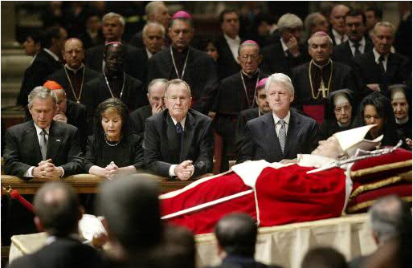

.
Rozdział 17 (cz.1)
„I przyszedł jeden z siedmiu aniołów, mających siedem czasz, i tak się do mnie odezwał: Chodź, pokażę ci sąd nad wielką wszetecznicą, która rozsiadła się nad wielu wodami, (2) z którą nierząd uprawiali królowie ziemi, a winem jej nierządu upijali się mieszkańcy ziemi. (3) I zaniósł mnie w duchu na pustynię. I widziałem kobietę siedzącą na czerwonym jak szkarłat zwierzęciu, pełnym bluźnierczych imion, mającym siedem głów i dziesięć rogów. (4) A kobieta była przyodziana w purpurę i w szkarłat, i przyozdobiona złotem, drogimi kamieniami i perłami; a miała w ręce swej złoty kielich pełen obrzydliwości i nieczystości jej nierządu. (5) A na czole jej wypisane było imię o tajemniczym znaczeniu: Wielki Babilon, matka wszetecznic i obrzydliwości ziemi. (6) I widziałem tę kobietę pijaną krwią świętych i krwią męczenników Jezusowych. A ujrzawszy ją, zdumiałem się bardzo. (7) I rzekł do mnie anioł: Dlaczego zdumiałeś się? Wyjaśnię ci tajemnicę kobiety i zwierzęcia, które ją nosi i ma siedem głów i dziesięć rogów. (8) Zwierzę, które widziałeś, było i już go nie ma, i znowu wyjdzie z otchłani, i pójdzie na zatracenie. I zdumieją się mieszkańcy ziemi, których imiona nie są zapisane w księdze żywota od założenia świata, gdy ujrzą, że zwierzę to było i że go nie ma, i że znowu będzie. (9) Tu trzeba umysłu obdarzonego mądrością. Siedem głów, to siedem pagórków, na których rozsiadła się kobieta, i siedmiu jest królów; (10) pięciu upadło, jeden jest, inny jeszcze nie przyszedł, a gdy przyjdzie, będzie mógł krótko tylko pozostać. (11) A zwierzę, które było, a już go nie ma, jest ósmym, i jest z owych siedmiu, idzie na zatracenie. (12) A dziesięć rogów, które widziałeś, to dziesięciu królów, którzy jeszcze nie objęli królestwa, lecz obejmą władzę, jako królowie na jedną godzinę wraz ze zwierzęciem. (13) Ci są jednej myśli, i oddadzą moc i władzę swoją zwierzęciu. (14) Będą oni walczyć z Barankiem, lecz Baranek zwycięży ich, bo jest Panem panów i Królem królów, a z nim ci, którzy są powołani i wybrani, oraz wierni. (15) I mówi do mnie: Wody, które widziałeś, nad którymi rozsiadła się wszetecznica, to ludy i tłumy, i narody, i języki. (16) A dziesięć rogów, które widziałeś, i zwierzę, ci znienawidzą wszetecznicę i spustoszą ją, i ogołocą, i ciało jej jeść będą, i spalą ją w ogniu. (17) Bóg, bowiem natchnął serca ich, by wykonali jego postanowienie i by działali jednomyślnie, i oddali swoją władzę królewską zwierzęciu, aż wypełnią się wyroki Boże. (18) A kobieta, którą widziałeś, to wielkie miasto, które panuje nad królami ziemi.” (Objawienie 17:1-18).
Jak już wspominałem ten rozdział, to dokładny opis „tworu”, na który wylewane są czasze gniewu Bożego z poprzedniego rozdziału tej Księgi.
Tylko jedna instytucja na przestrzeni wieków doskonale pasuje do opisu „wszetecznicy”, jest nią bez cienia wątpliwości papiestwo stojące na czele kościoła rzymskokatolickiego i co prawda można byłoby napisać grubą książkę z dowodami odnoszącymi się zaledwie do wersetów z 17 rozdziału, jednakże wystarczy wykazać kilka punktów.
„I przyszedł jeden z siedmiu aniołów, mających siedem czasz, i tak się do mnie odezwał: Chodź, pokażę ci sąd nad wielką wszetecznicą, która rozsiadła się nad wielu wodami” (17:1).
„Niewiasta”, jak już wiemy symbolizuje w Piśmie Świętym lud Boży lub diabelski - odstępczy.
„Niewiasta czysta” ilustruje kościół Boży:
„Zabiegam bowiem o was z gorliwością Bożą; albowiem zaręczyłem was z jednym mężem, aby stawić przed Chrystusem dziewicę czystą” (2 Koryntian 11:2, porównaj Efezjan 5:21-23, Izajasza 54:5-6).
„Nierządnica” symbolizuje kościół odstępczy:
„W czasach króla Jozjasza rzekł Pan do mnie: Czy widziałeś, co uczyniła odstępna żona, Izrael?” (Jeremiasza 3:6-10, porównaj Ozeasza 2:1-13, Ezechiela 16, Objawienie 17).
Wiele wód, morza, to symbol licznych narodów:
„Wrzawa licznych ludów! Burzą się, jak burzy się morze. Szum narodów! Szumią jak szum gwałtownych wód, (13) narody szumią, jak szumią wielkie wody” (Izajasza 17:12-13).
Wyjaśnia to również werset 15 tego rozdziału:
„Wody, które widziałeś, nad którymi rozsiadła się wszetecznica, to ludy i tłumy, i narody, i języki.”
Napisano, że wszetecznica „rozsiadła się nad wielu wodami”, gdyż papiestwo pojawiło się na ludnych terenach Europy, jako spadkobierca pogańskiego Rzymu. Obszar ówczesnych Włoch, a zwłaszcza Rzym, należał do najbardziej zaludnionych i multikulturowych na świecie, właśnie tam w najbardziej zaludnionym zakątku Europy narodził się kościół rzymskokatolicki, przyjmując wiele doktryn mających korzenie w Babilonii, Persji, Grecji, Rzymie.
Wszetecznica „rozsiadła się nad wielu wodami”, to znaczy także, że instytucja ta opanowała dużą część świata i dzięki sojuszom politycznym dzierży (dzierżyła) despotyczne berło nad wieloma narodami, ma ogromne wpływy i autorytet na świecie.
„Z którą nierząd uprawiali królowie ziemi, a winem jej nierządu upijali się mieszkańcy ziemi.” (17:2).
Nierządnica podaje ludziom wino odstępczych nauk, a z władcami świata dopuszcza się nierządu. Nierząd w profetycznym języku to związek religii z polityką, kościoła z państwem, chrześcijaństwa z pogaństwem, a przede wszystkim BAŁWOCHWALSTWO.
„A ty, nabrawszy wspaniałych swoich klejnotów z mojego złota i srebra, które ci dałem, robiłaś sobie podobizny bożków i z nimi uprawiałaś nierząd.” (Ezechiela 16:17-19, porównaj Jeremiasza 2:20-37, 13:27, Ozeasza 2:5).
W kwestii bałwochwalstwa, czy związków tronu i tiary nie trzeba chyba nikogo przekonywać, mamy na to aż nadto dowodów, również w historii najnowszej.
Wspólną cechą takiego systemu władzy była oficjalna religia, która przy pomocy państwa narzucała swe zasady wiary całemu społeczeństwu, prześladując tych, którzy nie akceptowali jej (papieża) duchowego autorytetu.
Od wieków przywódcy kościoła rzymskokatolickiego dyrygują narodami świata - nawet dzisiaj ponad miliard ludzi deklaruje posłuszeństwo papieżowi i kościołowi katolickiemu, a w siedzibie Unii Europejskiej, Watykan ma swoje wyznaczone, specjalne, honorowe miejsce…

Kościół rzymskokatolicki uprawia duchowy nierząd, upija ludzi, zwodzi ich używając chrześcijańskich nazw, tytułów, pięknych słów, a nawet fragmentarycznie Pisma Świętego, chociażby na przykład używając imienia bogobojnej Marii w celach oddawania czci „królowej Niebios” (Babilońska Semiramis) - starożytny kult nadal trwa, tylko w nowym opakowaniu.
Dlatego też tak łatwo im zwodzić ludzi, którzy nie znają Pisma Świętego, gdyż ubierają wszystko w piękne, chrześcijańskie nazwy, uprawiają wszystkie bałwochwalcze obrzydliwości starożytnego Babilonu pod płaszczykiem „chrześcijaństwa”, upijając mieszkańców ziemi kłamstwami, które trafnie opisują wersety z księgi Izajasza:
„Ale i ci chwieją się od wina i zataczają się od mocnego napoju; kapłan i prorok chwieją się od mocnego napoju, są zmożeni winem, zataczają się od mocnego napoju, chwieją się podczas prorokowania, zataczają się podczas wyrokowania. (8) Bo wszystkie stoły aż do ostatniego miejsca są pełne plugawych wymiocin (9) Kogóż to chce uczyć poznania i komu tłumaczyć objawienie? Czy odwykłym od mleka, odstawionym od piersi? (10) Bo paple przepis za przepisem, przepis za przepisem, nakaz za nakazem, nakaz za nakazem, trochę tu, trochę tam. (14) Dlatego słuchajcie słowa Pana, wy szydercy, panujący nad tym ludem, który jest w Jeruzalemie! (15) Ponieważ mówicie: Zawarliśmy przymierze ze śmiercią i z krainą umarłych mamy umowę, więc gdy nadejdzie klęska potopu, nie dosięgnie nas, gdyż kłamstwo uczyniliśmy naszym schronieniem i ukryliśmy się pod fałszem. (17) Lecz schronienie kłamstwa zmiecie grad, a kryjówkę zaleją wody” (Izajasza 28:7-9, 14-15, 17-18).
Weźmy chociażby przykład zmarłych. Biblia nie zawiera ani jednego przykładu, a tym bardziej polecenia, aby modlić się za lub do zmarłych. Nigdzie w tej księdze nie czytamy o tym, aby modlić się za/do zmarłych. Co więcej, samo pojęcie duszy nieśmiertelnej tam nie występuje, gdyż, jak głosi Pismo „dusza, która grzeszy, ta umrze” (Ezechiela 18:4 BG).
Wiemy, że z chwilą śmierci „giną wszystkie zamysły” (Psalm 146:3-6) człowieka, ciało wraca do ziemi, a tchnienie życia do Boga, „los synów ludzkich jest taki, jak los zwierząt, jednaki jest los obojga. Jak one umierają, tak umierają tamci; i wszyscy mają to samo tchnienie. Człowiek nie ma żadnej przewagi nad zwierzęciem” (Koheleta 3:19-20), jednakże nie dla matki kłamstwa, która starannie pielęgnuje pierwsze kłamstwo „na to rzekł wąż do kobiety: Na pewno nie umrzecie” (1 Mojżeszowa 3:3-4).
Kościół rzymskokatolicki nawołuje do bicia pokłonów posągom i obrazom do wiary w trzech bogów, do modlitw do zmarłych, do służenia szatanowi, do niezliczonych bluźnierstw i ohydztw, którymi Bóg się brzydzi i jednocześnie kościół spokojnie zapewnia „na pewno nie umrzecie”, gdyż po śmierci jest życie, a my zawarliśmy ze śmiercią przymierze, oto one:
„Księża mają władzę i wiedzę, władzę tak wielką, że mogą nawracać grzeszników z piekła, sprawiać by stawali się wartościowi dla nieba, a także zmieniać ich ze sług Szatana w Dzieci Boże.” (Liguori, "Obowiązki i Przywileje księży", strona 27,28).
Obraz wszetecznej kobiety, ukazany w wizji Janowi, symbolizuje pseudochrześcijaństwo, które podobnie jak starożytny Izrael – pogrążyło się w bałwochwalstwie.
Tak właśnie postrzegał kościół papieski Girolamo Savonarola (1452–1492), przeor klasztoru św. Marka we Florencji, który wołał:
„Przyjdź tutaj łajdacki Kościele, przyjdź tutaj i słuchaj, co Pan ci mówi: Dałem ci piękne szaty, a ty uczyniłeś z nich bóstwo; ze świętych naczyń uczyniłeś naczynia pychy, z sakramentów uczyniłeś przedmiot świętokupstwa, w swej rozwiązłości stałeś się wszeteczną nierządnicą; jesteś gorszy niż odrażające zwierzę (...). Stałeś się domem publicznym, zbudowałeś wszędzie dom publiczny. Co robi nierządnica? Zasiada na salomonowym tronie i wzywa: kto ma pieniądze, jest wpuszczony i robi, co mu się podoba, kto pragnie dobra, jest wypędzony precz. Tak, więc, o nierządny Kościele, pokazałeś swoją brzydotę całemu światu, a twój fetor wzbił się pod niebiosa. Twój nierząd rozprzestrzeni się wszędzie: w Italii, Francji, Hiszpanii” (Roberto Gervaso, „Borgiowie”, s. 96).
„Papież zagarnął ziemię, tron ziemski i ujął miecz w rękę; od tego czasu wszystko też tak idzie, tylko do miecza dodano kłamstwo, matactwo, oszustwo, przesądy, łotrostwo, grano na najświętszych, najszczerszych, najbardziej ufnych i płomiennych uczuciach ludu; wszystko, wszystko sprzedano za pieniądze, za podłą władzę świecką. Czyż to nie jest nauka Antychrysta?!” (Edmund Lewandowski, „Oblicza religii chrześcijańskiej”).
„A kobieta była przyodziana w purpurę i w szkarłat, i przyozdobiona złotem, drogimi kamieniami i perłami” (17:4).
Te słowa świadczą to o tym, że instytucja ta wyróżnia się bogactwem, próżnością i pychą.
Ponieważ tekst wymienia bogate stroje, przypomnijmy, że purpura o odcieniu fioletowym jest kolorem szat biskupich, zaś szkarłat – kardynalskich.
Warto też przypomnieć, że pierwsi naśladowcy Pana (biskupi, diakoni, starsi zborów) nie posiadali odmiennych szat.
Jeżeli weźmiemy do ręki jakiekolwiek czasopismo lub obejrzymy jakikolwiek program transmitujący z Watykanu - nie będziemy mieli jakichkolwiek wątpliwości, że w hierarchii kapłanów, zwłaszcza biskupów i kardynałów kolory dominujące to szkarłat i purpura.
Arcykapłan w Starym Testamencie symbolizował Jehoszua Chrystusa (Hebrajczyków 8:1-6). Widzimy tu aluzje do ubioru owego arcykapłana (szkarłat i purpura) wskazujące także pośrednio, że nierządnica stawia siebie w miejscu Chrystusa, stając się tym samym antychrystem, gdyż słowo antychryst, w języku greckim składa się z dwóch wyrazów: „w miejsce” oraz „Chrystus”.
Większość budowli, rekwizytów i dewocjonali Watykanu jest wypchana złotem i drogocennymi kamieniami, złocone ornamenty, złocone szaty, itd. – lista jest długa, jest tego wprost przepych, w końcu Watykan to najbogatsza instytucja na świecie, zwolniona z podatków, nikt nie jest nawet w stanie policzyć tego bogactwa ukrytego w ziemiach, posiadłościach, tajnych kontach bankowych itp.).
Cokolwiek by powiedzieć o bogactwach i szatach liturgicznych rzymskiego kleru, zarówno ich pochodzenie, jak i ewolucja nie mają nic wspólnego z ewangelicznym Chrystusem, który odrzucił chwałę i ziemską koronę, który żył skromnie i płacił podatki, który nie zabiegał o ziemskie bogactwa, a Jego królestwo nie jest z tego świata (Jana 18:36).
„Miała w ręce swej złoty kielich pełen obrzydliwości i nieczystości jej nierządu.” (17:4).
To bezpośrednio wiąże się z doktryną religijną o rodowodzie pogańskim.
Rezultatem duchowego nierządu jest cały szereg trujących nauk, którymi system papieski, czyli „wielki Babilon, napoił wszystkie narody winem szaleńczej rozpusty” (Objawienie 14:8).
Wino błędu składa się z wielu fałszywych postaw i nauk – takich jak podział wiernych na kler i laików, chrzest niemowląt, kult niedzieli, dogmat o Trójcy Świętej, doktryna mszy z tak zwanym przeistoczeniem, czczenie aniołów, świętych, ich relikwii i obrazów, kult papieża, który używa imion bluźnierczych, do których ma prawo tylko Bóg, czczenie obrazów i pomników, budowanie świątyń, modlitwy do zmarłych, spowiedź uszna, fałszowanie Pisma Świętego, wprowadzenie szat liturgicznych z babilońską tiarą, używanie wody święconej, afery pedofilskie i ich tuszowanie, dogmaty maryjne, prymat i nieomylność biskupa Rzymu, celibat duchownych, wszystkie sakramenty z nieśmiertelnością duszy, czyśćcem i piekłem włącznie oraz przyjęcie apokryfów, zrównanie Tradycji z Biblią, wprowadzenie litanii, różańca, odpustów, potępianie aż do połowy XX wieku wolności religijnej, wolności sumienia, słowa i prasy. Oraz wiele, wiele, wiele, innych zwyczajów i odstępstw od czystości i prawdy.
Nazywanie przez ludzi biskupa Rzymu ojcem świętym i nieomylnym, jest jawnym buntem przeciw Bogu: „Nikogo też na ziemi nie nazywajcie ojcem swoim; albowiem jeden jest Ojciec wasz, Ten w niebie” (Mateusza 23:9), określanie go wieloma innymi bluźnierczymi tytułami, budowanie mu pomników za życia i po śmierci, adoracja jego osoby, modlitwy do niego, ubóstwianie duchowieństwa katolickiego: „nie pozwalajcie się nazywać przewodnikami, gdyż jeden jest przewodnik wasz, Chrystus” (Mateusza 23:10) i uznawanie ich pośredniczej funkcji: „Albowiem jeden jest Bóg, jeden też pośrednik między Bogiem a ludźmi, człowiek Chrystus Jezus”, nawoływanie do modlitw do i za zmarłych: „niech nie znajdzie się u ciebie… wróżbita, ani wieszczbiarz, ani guślarz, ani czarodziej, (11) ani zaklinacz, ani wywoływacz duchów, ani znachor, ani wzywający zmarłych; (12) gdyż obrzydliwością dla Pana jest każdy, kto to czyni” (5 Mojżesza 18:10-12), jest niczym innym, jak jawną służbą na dworze szatana: „Ojcem waszym jest diabeł i chcecie postępować według pożądliwości ojca waszego. On był mężobójcą od początku i w prawdzie nie wytrwał, bo w nim nie ma prawdy. Gdy mówi kłamstwo, mówi od siebie, bo jest kłamcą i ojcem kłamstwa. (45) Ponieważ ja mówię prawdę, nie wierzycie mi.” (Jana 8:44).
„Nie będziecie czynili sobie bałwanów ani stawiali sobie podobizny rzeźbionej, ani kamiennych pomników, ani też umieszczali kamiennych obrazów w ziemi waszej, by im się kłaniać; gdyż Ja, Pan, jestem Bogiem waszym.” (3 Mojżesza 26:1).
„Przeklęty mąż, który zrobi podobiznę rzeźbioną lub laną, obrzydliwość dla Pana, dzieło rąk rzemieślnika, i ustawi go w ukryciu.” (5 Mojżeszowa 27:15).
„Spustoszę wasze wzgórza i rozwalę wasze obeliski, i rzucę wasze trupy na rozwaliska waszych bałwanów, i obrzydzi was sobie moja dusza.” (3 Mojżeszowa 26:30).
Wielki obelisk stoi w samym centrum Watykanu, na placu Piotra, przywieziony z Egiptu. Paradoksalnie ci, którzy zachowują celibat, ustawili sobie pogański symbol seksu w samym centrum.
„Nie postawisz też sobie pomnika, którego Pan, Bóg twój nienawidzi.” (5 Mojżeszowa 16:22).
Przejedźcie się drogą i zobaczcie ile jest przy samych tylko drogach poustawianych świątyniek, Aszer (Maryi), posągów, krzyży, itp. O podobnych odstępcach pisał prorok:
„Wymyślili też synowie izraelscy rzeczy niewłaściwe o Panu, Bogu swoim, pobudowali sobie świątynki na wzgórzach we wszystkich swoich miejscowościach, począwszy od baszty strażniczej aż do grodu warownego; (10) i nastawiali sobie słupów i posągów Aszery na każdym wyniosłym pagórku i pod każdym zielonym drzewem; (11) i spalali tam we wszystkich świątynkach na wyżynach kadzidła (dzisiejsze świeczki) jak ludy, które Pan uprowadził przed nimi do niewoli; popełniali złe czyny, pobudzając Pana do gniewu. (12) Czcili też bałwany (posągi, obrazy, krzyże, relikwie), o których powiedział im Pan: Nie czyńcie tego. (16) Odrzucili wszystkie przykazania Pana, Boga swego, i sporządzili sobie dwa odlewane cielce, sporządzili sobie posąg Aszery (Marii) i oddawali pokłon całemu zastępowi niebieskiemu (modlitwy do „świętych”), i służyli Baalowi (szatan w trójcy).” (2 Królów 17:9-12, 16).
Co najgorsze w tym wszystkim, papieże twierdzą, że ich władza i postanowienia przewyższają postanowienia nawet Pana i samej Ewangelii, a ludzie niestety, ale się na to godzą. W Rota Romana czytamy:
„Papieża nie wiążą ani nauki apostołów, ani słowa ewangelii, które nie mają prawa mu rozkazywać. On robi cokolwiek chce, nawet rzeczy ludziom niedozwolone, ponieważ jest więcej niż Bóg” (dr S. Osusky, „Kto jest bliższy prawdy”, s. 47).
Trudno o większy szczyt zakłamania, pychy i cynizmu, jednakże w encyklice z 20 czerwca 1894 Leon XIII zadeklarował: „Na tej ziemi zajmujemy miejsce Boga Wszechmocnego”, domagając się „tak zupełnej uległości i posłuszeństwa woli Kościoła i papieża, jak wobec samego Boga”.
Czy roszczenia papiestwa – przywłaszczenie sobie tytułów należnych wyłącznie Bogu lub Chrystusowi – nie są wystarczającym przykładem arogancji i bluźnierstwa?
A przy tym, niestety, nie jest to pełny opis charakteru odstępczej religii i zamiast iść w ślady prostego rybaka, ludzie wolą czcić i słuchać „swojego ojca”:
„Piotr zaś i apostołowie odpowiadając, rzekli: Trzeba bardziej słuchać Boga niż ludzi” (Dzieje 5:29).
„Lecz Piotr i Jan odpowiedzieli im i rzekli: Czy słuszna to rzecz w obliczu Boga raczej was słuchać aniżeli Boga, sami osądźcie” (Dzieje 4:19).
Gdy papież, na przykład Benedykt XVI twierdzi, że do zbawienia niezbędne są sakramenty, których podstawą jest głównie Tradycja Kościoła, Jehoszua głosił coś zupełnie odwrotnego, stwierdził: „Daremnie mi cześć oddają, głosząc nauki, które są nakazami ludzkimi” (Mateusza 15:9, Marka 7:7–9).
Podobne stanowisko zajął później apostoł Paweł, który jednoznacznie potępił ludzkie tradycje (Galacjan 1:6–9, Kolosan 2:8), oraz apostoł Piotr, który przestrzegał przed fałszywymi nauczycielami, bo ci, jak pisał „wprowadzać będą zgubne nauki i zapierać się Pana, który ich odkupił” (2 Piotra 2:1), co w najbardziej rażący sposób urzeczywistniło się w doktrynie kościoła rzymskiego. Dogmaty i Tradycja tego Kościoła są bowiem zaprzeczeniem nauki apostolskiej, która głosi, że „wiara jest ze słuchania, a słuchanie przez Słowo Chrystusowe” (Rzymian 10:17).
Na ten fakt zwracał też uwagę Piotr, który w swoich listach ani razu nie odwoływał się do jakiejkolwiek tradycji, a jedynie do Słowa Bożego, które prowadzi do odrodzenia, duchowego wzrostu i uświęcenia (1 Piotra 1:22–25, 2:2, 4:11).
Papiestwo powołujące się na apostoła Piotra, tak naprawdę nie ma z nim nic wspólnego. Apostoł ten, bowiem w swych listach ani jednym słowem nie wspomniał o swym prymacie i nieomylności, o boskim kulcie Marii (jej wiecznym dziewictwie, niepokalanym poczęciu, wniebowzięciu, pośrednictwie i modlitwach kierowanych do niej), o kulcie świętych, ich relikwii i obrazów, krzyża, o kapłaństwie sakramentalnym z celibatem włącznie, o czyśćcu i mękach piekielnych, o transsubstancjacji, o spowiedzi usznej oraz o święceniu niedzieli i innych katolickich świętach i zwyczajach. Dlaczego Piotr ani jednym słowem nie wspomniał o tym wszystkim, co jest tak istotne dla kościoła rzymskiego? Odpowiedź może być tylko jedna: ponieważ wszystkie te i wiele innych elementów katolickiej doktryny były zupełnie obce Piotrowi. Nie mają one, bowiem absolutnie nic wspólnego z przesłaniem Biblii.
Miedzy innymi nawet „błogosławiony” katolickiego kościoła, kardynał John Henry Newman (1801–1890) zwrócił uwagę na pogańskie korzenie tegoż kościoła i napisał:
„Świątynie ku czci poszczególnych świętych ozdabiane w związku ze świętami gałęziami drzew, kadzidło, lampy, świece, ślubowane ofiary dziękczynne za powrót do zdrowia, woda święcona, prawo azylu, dni święte i całe okresy liturgiczne, używanie kalendarza, procesje i błogosławieństwo pól, szaty liturgiczne, tonsura, pierścień małżeński, zwracanie się ku wschodowi słońca, obrazy w okresie późniejszym, być może śpiew kościelny i Kyrie eleison – wszystko to jest pochodzenia pogańskiego i zostało uświęcone przez przejęcie do Kościoła”
(„O rozwoju doktryny chrześcijańskiej”).
Kiedy mowa o "kielichu" na myśl również przychodzi ostatnia wieczerza upamiętniająca Jego śmierć i zmartwychwstanie, łamanie chleba - Nowe Przymierze w krwi Jehoszua Chrystusa.
Natomiast w kościele katolickim widzimy ogromny kontrast, kiedy mowa o "kielichu" kościoła rzymskokatolickiego na myśl przychodzi katolicka „Komunia”, odrzucająca biblijny koncept prostej i uwielbiającej pamiątki śmierci Chrystusa i przelania Jego krwi. Zamiast tego mistycyzm – czary i straszne bluźnierstwa.
Romanizacja Ostatniej Wieczerzy doprowadziła do ofiarnego spożywania Jehoszua Chrystusa, znanego teraz pod nazwą „eucharystii” w trakcie mszy katolickiej.
Prawdziwi poganie spożywali (spożywają) prawdziwe ciała ich (ludzkich, zwierzęcych) ofiar i piją ich krew, natomiast katolicy się od nich nie różnią, gdyż jedzą opłatek i piją wino wyobrażając sobie, że to prawdziwe ciało i krew – OHYDA!!!
I wielki sukces szatana, który wprowadził ten pogański, okultystyczny rytuał, którym się karmi, ubliżając Bogu i Jego Synowi – symbolicznie mordując i mordując Go na nowo…
Oto słowa zmarłego kardynała Stefana Wyszyńskiego, który w przemówieniu podczas święceń kapłańskich powiedział:
„Otrzymaliście w tej chwili straszliwą (!) władzę. To jest władza nie tylko nad szatanami, nie tylko nad znakami sakramentalnymi, ale przede wszystkim - nad samym Bogiem! Jesteście przecież „spirituales imperatores”, a jako tacy, macie władzę rozkazywać nawet samemu Bogu. On tego zapragnął, on tego od was chciał! Będziecie Mu rozkazywać, gdy na wasze słowa, zstępować będzie na ołtarze - Bóg żywy, choć zakryty, lecz prawdziwy (…) Kto na Was patrzy, widzi w Was Boga. Kto do Was się zbliża, nie szuka ludzkiego, ale Bożego. Prawdziwie: Sacerdos, alter Christus! Kapłan jest drugim Chrystusem” (Stefan Wyszyński Ateneum Kapłańskie, Zeszyt 2, IX-X 1960 r.).
Zważywszy, że kościół rzymski ma najwięcej wiernych i jest jedynym, który nazywa swoich kapłanów „Alter Chrystus”, czyli drugi (inny) Chrystus, to w skali świata daje nam armię „innych Chrystusów”. Czy już sam ten fakt nie powinien dać wiele do myślenia? Wszak Jehoszua powiedział:
„Baczcie, żeby was, kto nie zwiódł. Albowiem wielu przyjdzie w imieniu moim, mówiąc: Jam jest Chrystus i wielu zwiodą” (Mateusza 24. 4–5).
Ponadto kościół uzurpuje sobie moc i władzę większą od samego Boga oraz Jehoszua Chrystusa, któremu rozkazuje zstąpić na ołtarze, zamienić się w kawałek chleba i być dotykanym przez tego „wszechwładnego kapłana”, a potem zostać spożytym przez każdego, komu tylko poda ów opłatek (często największym obłudnikom i oszustom), nie można mieć żadnych wątpliwości, że wszystko to nie ma nic wspólnego z pierwotnym chrześcijaństwem apostolskim.
Według podręcznika dla duchownych katolickich, autorstwa kardynała Alfonsa de Ligurio „sam Bóg posłuszny wypowiedzianym przez kapłanów słowom Hoc est corpus meum (To jest ciało moje) — zstępuje na ołtarz, przychodzi, gdzie go zawołają, ilekroć go zawołają, oddając się w ich ręce, choćby byli jego nieprzyjaciółmi. Gdy już przyjdzie, pozostaje całkowicie w ich gestii; przesuwają Go z miejsca na miejsce, jak im się podoba, mogą też, jeśli sobie życzą, zamknąć Go w tabernakulum, zostawić na ołtarzu lub usunąć na zewnątrz kościoła, mogą też, jeśli tak postanowią, spożyć Jego ciało lub podać innym, jako pokarm”.
Zamiast „kielicha zbawienia” (Psalm 116:13) - obrzydliwości i nieczystości. Żeby zastraszyć ludzi i wymóc posłuszeństwo nie cofnęli się nawet przed zrobieniem z Boga, który jest miłością - najgorszego potwora i zbrodniarza jakikolwiek istniał, który męczy ludzi w piekle - ludzie obudźcie się i posłuchajcie proroka Jeremiasza:
„Uchodźcie z pośrodka Babilonu i niech każdy ratuje swoje życie, abyście nie zginęli przez jego winę, gdyż jest to czas pomsty dla Pana, On odda mu to, na co zasłużył! (7) Babilon jest złotym kubkiem w ręku Pana, upijającym całą ziemię. Z jego wina piły narody, dlatego też narody oszalały. (17) Głupi jest każdy człowiek, gdy nie rozumie, że każdy złotnik okryty jest hańbą z powodu bałwana, gdyż oszustwem jest to, co ulał, i nie ma w tym ducha. (18) Są one marnością, robotą wartą śmiechu, zginą, gdy przyjdzie na nie kara.” (Jeremiasza 51:6-7, 17-18).
„Księża mają władzę i wiedzę, władzę tak wielką, że mogą nawracać grzeszników z piekła, sprawiać by stawali się wartościowi dla nieba, a także zmieniać ich ze sług Szatana w Dzieci Boże. I sam Bóg jest zobowiązany do przestrzegania tych osądów księży. Ten Suweren, Pan Wszechświata jedynie podąża za sługami swymi, wiedząc, że to, co ma miejsce w niebie jest podejmowane na Ziemi - jako w niebie tak i na ziemi.” (Liguori, "Obowiązki i Przywileje księży", strona 27,28).
Czyż nie więdną uszy, kiedy się tego słucha?!
„Każdy bowiem, kto się wywyższa, będzie poniżony” (Łukasza 14:11).
Poniższe słowa Jehoszua nie straciły na aktualności i doskonale pasują do hierarchii kościoła rzymskokatolickiego:
„Biada wam, uczeni w Piśmie i faryzeusze, obłudnicy, że oczyszczacie z zewnątrz kielich i misę, wewnątrz zaś są one pełne łupiestwa i pożądliwości. (28) Tak i wy na zewnątrz wydajecie się ludziom sprawiedliwi, wewnątrz zaś jesteście pełni obłudy i bezprawia.” (Mateusza 23:25, 28).
Biblia obnaża papieski system eklezjalny jako system odstępczy od „wiary, która raz na zawsze została przekazana świętym (prorokom i apostołom)” (Judy 3, por. Efezjan 2:20).
Jest to bluźnierczy system, kierowany duchem antychrysta, który upija ludzi zwodniczymi naukami, które są obce Słowu Bożemu! Jednakże ci ludzie nie są bez grzechu, gdyż świadomie pozwalają siebie zwodzić, a „każdy z nas za samego siebie zda sprawę Bogu” (Rzymian 14:12).
Świadome trwanie w systemie religijnym, w wierze, która stoi w rażącej sprzeczności z ewangelicznym przesłaniem Słowa Bożego, jest złe, grzeszne i prowadzi do zguby. Grzech jest bowiem przestępstwem prawa Bożego (1 Jana 3:4), jest rozminięciem się z wolą Boga, z wiarą proroków, uczniów Pańskich, a w szczególności z „wiarą Jezusa” (Objawienie 14:12).
Wierzyć bezpodstawnie jest szczytem fanatyzmu!
Jedyną prawdziwa wiara - to przynależność do Chrystusa - słuchanie i naśladowanie naszego Pana we WSZYSTKIM!
„A na czole jej wypisane było imię o tajemniczym znaczeniu: Wielki Babilon, matka wszetecznic i obrzydliwości ziemi.” (17:5).
Napis na jej czole „Wielki Babilon” przeciwstawny jest słowom „Poświęcony Panu” z diademu na czole arcykapłana (2 Mojżesza 28:36, 38). Podobne wypowiedzi odnoszące się do odstępczego, bałwochwalczego narodu, ludu, znajdujemy w Starym Testamencie:
„Podnieś swoje oczy na wzgórza i zobacz, gdzie nie oddałaś się mężczyźnie? Na drogach siadałaś wyczekująco, jak Arab na pustyni, i zbezcześciłaś kraj swoim wszeteczeństwem i swoją złością. (3) I dlatego ustały deszcze jesienne, i nie było deszczów wiosennych. Lecz ty masz czoło kobiety wszetecznej, nie znasz już wstydu.” (Jeremiasza 3:2-3).
Starożytny Babilon był skupiskiem i wylęgarnią bałwochwalczych kultów. Czy tym samym nie jest kościół rzymskokatolicki? Toczka w Toczkę...
Odkrycia archeologiczne pokazują trójcę w starożytnym Babilonie ukrytą pod postacią trójkąta równoramiennego, wskazującą na równość trzech bogów - bałwochwalczy kult.
Ten sam symbol (wyrażany również poprzez znak krzyża) przejął kościół rzymski.
Nauka o trójcy zakorzeniona jest w cywilizacji Babilonu, Indii, Chaldei, Fenicji, Egiptu, Rzymu, Skandynawii, Germanii, nawet u Indian. Jest powszechną cechą kultów pogańskich. Koncepcja trójcy poprzez Babilon rozpowszechniła się na całym świecie, dlatego też Babilon w Biblii jest symbolem odstępstwa, w którym główny kult babiloński to trójca, a zaraz za po nim kult bogini Matki z Synem (Semiramis).
Oznaczać to może tylko jedno – system papieski odziedziczył i pielęgnuje ducha starożytnego Babilonu, a to wskazuje na uosobienie zła owej potęgi religijno-politycznej, która wyrosła z imperialnego Rzymu i pielęgnuje praprzyczyny wszelkiego odstępstwa, bałwochwalstwa i zła na ziemi.
Ponieważ nauka o trójcy jest niebiblijną i przez Pisma nie można jej udowodnić, a katolicy nie potrafią zrozumieć, jak trzy może być równe jeden, dlatego nazywa się ją tajemnicą, po to, aby się nad tym nie zastanawiać.
Ale jest to trujące wino, czyli nauka katolickiego Babilonu, o którym pisał Paweł już w I wieku.
„Albowiem już działa tajemnica bezbożności. Niech tylko ten, co teraz powstrzymuje, ustąpi miejsca” (2 Tesaloniczan 2:7).
W łacinie kościelnej, „sacramentum”, znaczy „tajemnica religii”.
Sakramenty kościoła rzymskokatolickiego, nieoderwalnie wiążą się z tajemnicą...
Nauka o trójcy mówi, że jest jeden Bóg w trzech osobach. Zadajcie jednak pytanie małemu dziecku - ilu jest bogów, jeśli mamy osoby:
1. Bóg Ojciec,
2. Syn Boga,
3. Duch Święty?
Każdy logicznie myślący człowiek powie: TRZY.
Kościół katolicki, twórca, a raczej spadkobierca po Babilonie tej nielogicznej i niemającej uzasadnienia w Biblii nauki, wszystko okrywa tajemnicą. Pojawia się jednak pytanie - Czy Biblia jest tajemnicza? Czy Bóg jest tajemniczy? Czy nasz Ojciec nie kocha nas i nie chce się nam objawić? Czy woli tajemnicze obrzędy kościelne, dziwne, niezrozumiałe formuły, niepotrzebne ofiary, czy też prostej rzeczy: „miłości chcę, a nie ofiary, i poznania Boga, nie całopaleń” (Ozeasza 6:6).
Nasz Bóg pragnie byśmy Go kochali, ale nie możemy Go kochać, jeśli Go nie znamy.
Boimy się nieznanego, gdyż nie wiemy, co nam przyniesie. Dlatego życie wieczne to poznanie Ojca i Syna, gdyż poznanie rodzi miłość.
Gdy poznajemy Boga, poprzez Jego Syna, dostrzegamy Jego życzliwość i dobroć, co rozpala w naszych umysłach odwzajemnienie tego głębokiego uczucia.
Jedną z najpotworniejszych zbrodni katolicyzmu jest to, że poprzez tworzenie tajemniczych, nieludzkich koncepcji Bóstwa, wyzwala u ludzi strach i obawę przed tym, który jedynie może nas uratować. Jest wymyślnym celem szatana, by owiać Boga tajemniczością i w skłonić praktycznie całe „chrześcijaństwo” do wiary w tajemniczą trójcę, gdzie jeden to nie jeden, a trzy to nie trzy tylko jeden - udaje mu się to znakomicie, tym bardziej, że jako ten trzeci, w trójcy odbiera od ludzi chwałę i cześć, zgodnie z tym, co głosi katolicki dogmat:
„Duch Święty z Ojcem i Synem wspólnie odbiera uwielbienie i chwałę” (DS 150).
To zresztą zawsze było szatana celem: „zrównam się z Najwyższym” (Izajasza 14:12-14).
Nieznany Bóg powoduje lęk, a lęk czyni z ludzi pogan, którzy w obawie przed bóstwem, oddają mu najróżniejsze ofiary, wymyślają rytuały i obrzędy, które mogą te bóstwo przebłagać, by się nie gniewało na biednych ludzi.
Tymczasem Bóg, który jest miłością i dobrocią, niczego przed nami nie ukrywa, objawia nam się w prostych objawieniach, logicznych wypowiedziach Pisma, uporządkowanych obrazach. Najlepszym przykładem tego działania był sam Pan Jehoszua, którego nauki były proste, jasne, pełne mocy, pozbawione podtekstów i tajemniczości, których jest pełna tradycja rabinistyczna, katolicka czy pogańska.
Poznanie (wiara) prawdy o Bogu i Jego Synu, jest podstawą planu zbawienia (Jana 17:3). Niepoznanie Boga lub Syna jest równoznaczne z brakiem życia wiecznego, dlatego poznanie nie jest tajemnicą dla żadnego człowieka pragnącego przyjąć to życie wieczne.
Bóg w miłości Swojej objawia się w tak jednoznaczny i prosty sposób, że tylko zaślepieniu duchem szatana zawdzięczać można tak wielkie zwiedzenie.
Jest rzeczą naprawdę zdumiewającą, prawdziwą tajemnicą nieprawości, że pomimo tylu jasnych wypowiedzi i świadectw w Piśmie, dotyczących Jednego Boga i Jednorodzonego Syna, ludzie wierzą masowo w innego boga.
„Wszak dla nas istnieje tylko jeden Bóg Ojciec, z którego pochodzi wszystko i dla którego istniejemy, i jeden Pan Jezus Chrystus, przez którego wszystko istnieje i dla którego my także istniejemy” (1 Koryntian 8:6).
Nie ulega wątpliwości, że Jehoszua jest odrębną osobą, a nie żadną hipostazą - jest Synem Boga. O tym mamy wyraźne świadectwo:
- samego Ojca (Marka 9:7, Mateusza 3:17),
- samego Syna (Jana 3:18, 10:36) i to pod przysięgą (Mateusza 26:63, 64),
- apostołów i uczniów (Jana 1:34, 49, 6:69, Mateusza 16:16, 1 Jana 4:9, 14-15),
- pogańskich żołnierzy (Mateusza 27:54),
- największego z proroków (Jana 1:34),
- Natanaela (Jana 1:49),
- nawróconego eunucha etiopskiego (Dzieje 8:37),
- także demony dobrze wiedziały, z kim mają do czynienia, gdy ujrzały Jehoszua (Mateusza 8:29, Marka 1:23-25, 5:2, 6-7, Łukasza 4:41).
Na bazie tej wiedzy (wiary) powstała społeczność, której nie przemogą „bramy śmierci” (Mateusza 16:16-18).
Cała Biblia jest świadectwem Ojca o Synu i życie wieczne jest w tym właśnie, że uznajemy Jehoszua za Syna. Świadectwo, jakie wydał Ojciec o Synu, jest świadectwem wydanym przez prawdziwego Ojca o prawdziwym Synu.
Mało, kiedy mamy tak pewne i wielostronne świadectwo…
Babilon z Apokalipsy jest charakteryzowany imieniem „TAJEMNICA”, gdyż znamienną cechą starożytnego systemu Babilonu były Chaldejskie „TAJEMNICE” stanowiące jego esencję.
Ślad Chaldejskich „Tajemnic” znaleźć można już za dni Semiramis, która żyła zaledwie pięć wieków po potopie i wiadomo, że wycisnęła piętno swego zepsutego i skażonego umysłu. Ta królowa Babilonu była nie tylko wzorem wyuzdanej pożądliwości i rozwiązłości, ale także w „Tajemnicach”, w których tworzeniu odgrywała ona główną rolę, była czczona, jako Rhea, wielka „MATKA” bogów. Jej ohydne rytuały, identyfikują ją z Venus, MATKĄ wszelkiej nieczystości. Miasto, które wzniosła i w którym królowała miało złą sławę wśród narodów, jako wielkie siedlisko zarówno bałwochwalstwa jak i uświęconej prostytucji.
Ta wielka MATKA nierządnic i obrzydliwości ziemi reprezentowana była z KIELICHEM w ręku.
Kościół rzymski przyjął ten symbol, jako swoje własne godło.
W 1825 roku z okazji jubileuszu, papież Leon XII wybił nawet medal noszący z jednej strony swój własny wizerunek, a z drugiej, kościół rzymski symbolizowany, jako „Kobieta”, trzymająca w lewej ręce krzyż, a w prawej KIELICH, dodatkowo udowadniając w ten sposób, że system kościoła rzymskiego zainaugurowany został przez Babilońską królową.
„Miała w ręce swej złoty kielich pełen obrzydliwości i nieczystości jej nierządu.” (17:4).
Znamienne jest, że kościół rzymski bardzo chętnie sam siebie nazywa, określa „matką”.
Zobacz ciąg dalszy w CZĘŚCI 2:
https://mojabiblia.github.io/j/56.html
.
kopia strony: https://jehoszua.ddv.pl/readarticle.php?article_id=55 Wszelkie prawa autorskie należą się autorowi tej strony
z734edd9d17z